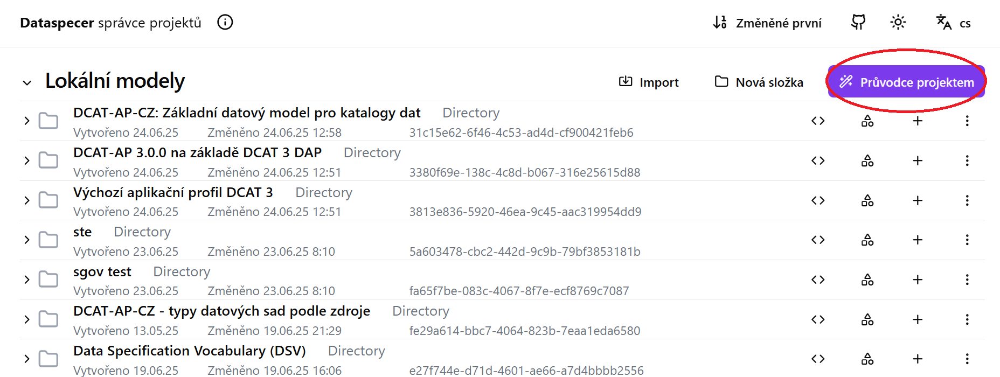
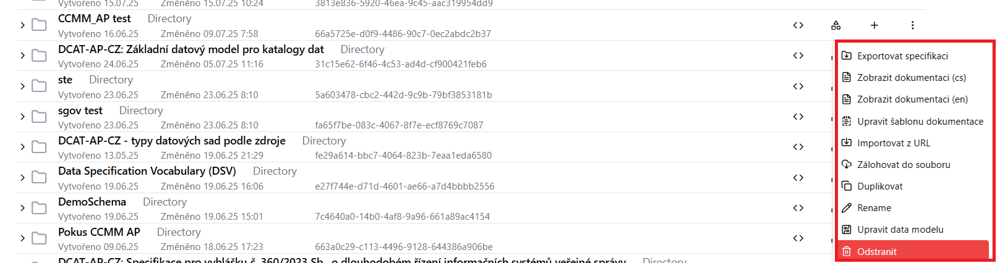
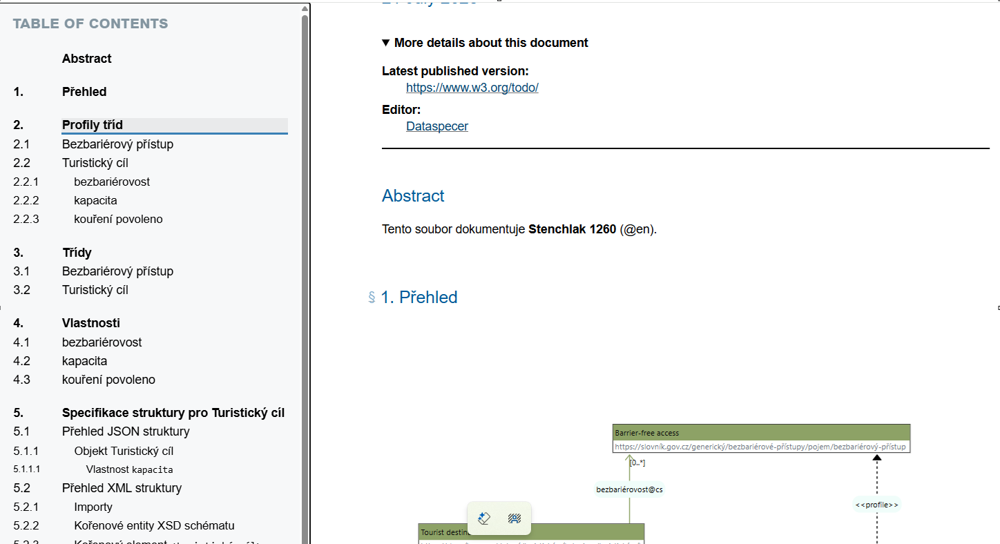

Nástroj Dataspecer
Dataspecer je nástroj pro tvorbu, správu a vizualizaci sémantických datových specifikací,slovníků a aplikačních profilů až po odvozené technické artefakty, jako jsou datová schémata (xml, json, csv), validační pravidla, API a aplikační prototypy. Aplikace je přístupná Zde
Základní rozhraní
 V základním rozhraní je zobrazen přehled již vytvořených projektů.
1.Průvodce projektem
Vytváříme nový projekt (slovník, aplikační profil datové schéma), Slovník Slovník vytvářím v případě, že potřebuje
Aplikační profil Využijeme když chceme upravit nebo vytvořit nový metadatový model.
Datové schéma Vytvářím konkrétné technické schéma (JSON, XML).

Exportovat specifikaci - stáhne specifikaci vytvořeného slovníku/aplikačního profilu ve formě zip archivu.
Zobrazit dokumentaci cs/en Zobrazí náhled dokumentace k vytvořenému projektu.

Upravit šablonu dokumentace Otevře se html editor kde mohu editovat vzhled šablony vytvářené dokumentace.
Importovat z url - umožní přidat existující slovník či profil do aktuální specifikace.
Zálohovat do souboru - Stáhne zálohu ve formě zip archivu.
Duplikovat - Vytvoří kopii projektu.
Rename - Přejmenuje projekt.
Upravit data profilu - pro debugování - umožňuje textově editovat strojovou reprezentaci daného dataspecer modelu
Odstranit - vymaže projekt